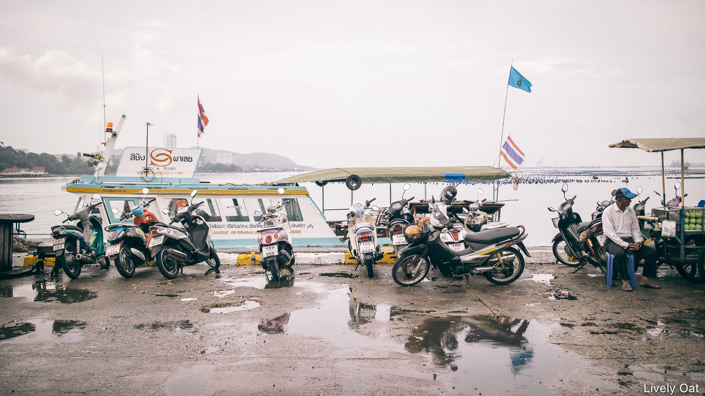
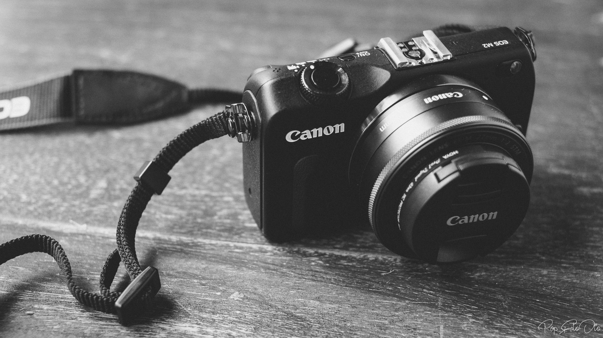
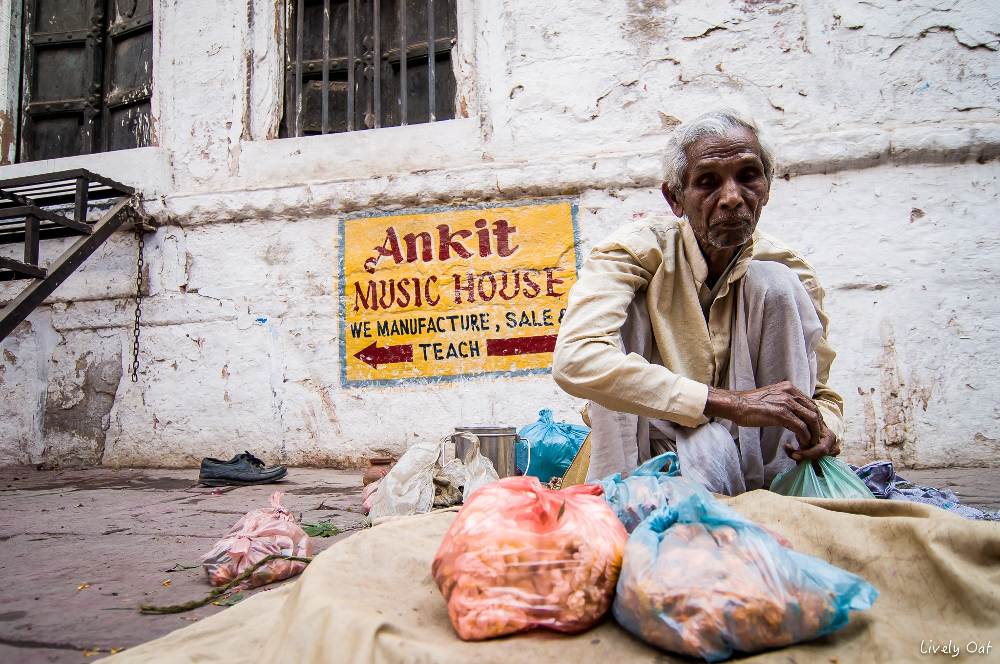
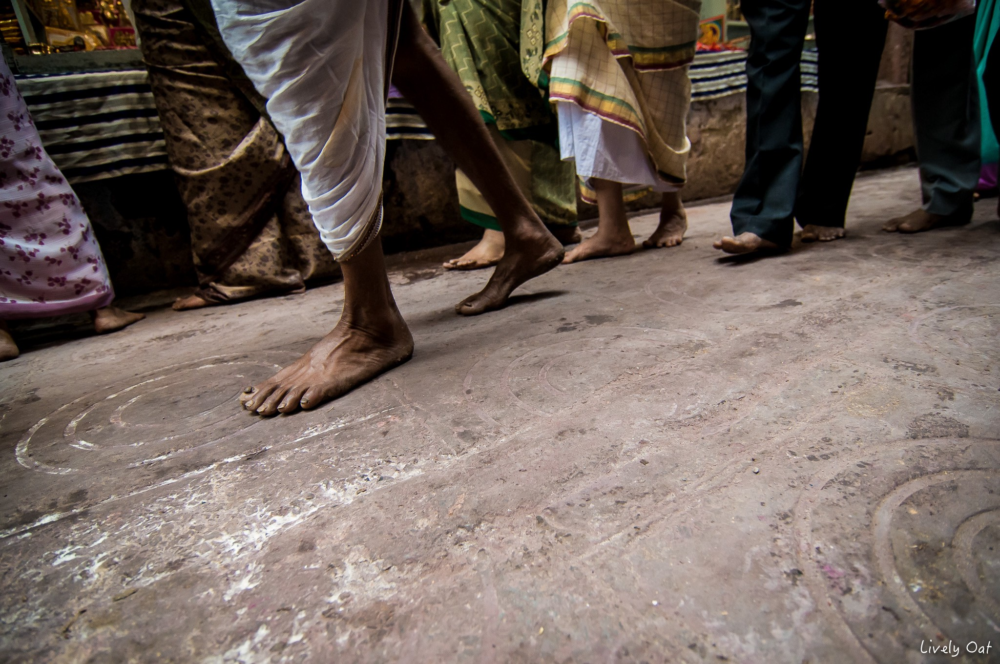
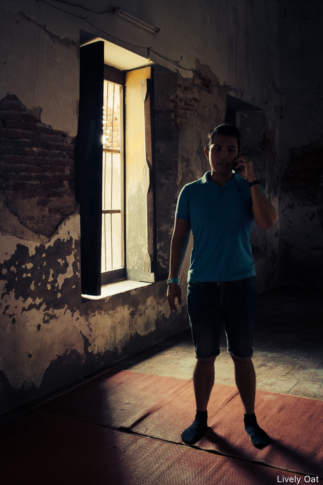

7 Nov 2019
Author : Nathachai
การถ่ายภาพในแนวของ Street Photography มันคือ การสะท้อนมุมมองความคิด เรื่องราวความเป็นจริง ความเป็นธรรมชาติของสิ่งต่างๆที่อยู่รอบตัวเรา หรือเรื่องราวต่างๆ ในแต่ละมุมมองที่อยากจะนำเสนอออกไปมากกว่าครับ เป็นการนำเสนอภาพในแบบที่มันเป็น เป็นธรรมชาติ ส่วนตัวแล้วไม่อยากให้จำกัดกันเพียงแค่ว่า ต้องเป็นภาพผู้คนบนท้องถนน หรือตึกรามบ้านช่องเท่านั้นครับ เพราะผมมองว่ามันจะค่อนข้างแคบไปหน่อย
มาเข้าเรื่องกันเลยครับ สำหรับในตอนนี้ จะขอแนะนำ 7 แนวคิดพื้นฐานง่ายๆ สำหรับท่านที่เป็นช่างภาพมือใหม่ หรือท่านใดก็ตามที่อยากจะฝึกการถ่ายภาพแนว Street Photography นี้นะครับ
สาเหตุที่อยากให้คิดถึงสิ่งที่ “อยากเล่าอะไร” เป็นอันดับแรก ก็เพื่อเป็นการ “สร้างเรื่องราวให้กับภาพถ่าย” ของเรานั่นเองครับ ไม่ต้องคิดเรื่องที่ยากก็ได้ แค่ลองตั้งโจทย์ ลองคิดเล่นๆ เหมือนกับการสร้างการบ้านให้กับตัวเองก็ได้ครับ การบ้านสำหรับการถ่ายภาพวันนี้เป็นต้น ซึ่งการคิดแบบนี้ จะไม่ทำให้เราถ่ายภาพแบบสะเปะสะปะครับ ที่สำคัญคือ เรากำลังฝึกกระบวนการคิดด้วยครับ เรื่องนี้สำคัญมากๆ
เห็นหลายคนมักคิดว่า ถ้าได้อุปกรณ์ตัวนั้น อุปกรณ์ตัวนี้มาถ่ายภาพ จะทำให้ได้ภาพที่ดี ที่สวย จะทำให้ดูเป็นเทพมากขึ้น … ผมขอบอกเลยว่า ความคิดแบบนี้ไม่จริงเลยครับ
การถ่ายภาพแนว Street สำหรับผม เลยใช้อุปกรณ์อะไรก็ได้ ไม่ได้จำกัด แต่ถ้าความชอบส่วนตัว ภาพแนวนี้ จะเป็นเหมือนภาพที่เรากำลังเล่าเรื่อง มุมมองของภาพจึงควรใกล้เคียงระยะสายตาของคนมากที่สุด ผมจึงชอบใช้เลนส์ในช่วง Normal ที่สุดครับ แต่ถ้าใครมีเลนส์ Fix นี่ยิ่งดีเลยครับ ซึ่งส่วนตัวแล้วจะชอบมาก และใช้อยู่บ่อยๆ
ส่วนการตั้งค่าการถ่ายภาพสำหรับมือใหม่นั้น ก็ไม่อยากให้เฉพาะเจาะจงกันมากจนเกินไป เพราะผมมองว่า จริงๆแล้ว จะตั้งกล้องไว้โหมดไหน ก็ถ่ายภาพได้ทั้งนั้นครับ อยู่ที่เราเข้าใจความสัมพันธ์ของฟังก์ชั่นต่างๆแล้วหรือยังแค่นั้นเอง … แต่ถ้าให้แนะนำ โหมด A หรือโหมดที่ตั้งค่าคงที่ของรูรับแสง ดูจะง่ายที่สุด สำหรับมือใหม่ที่จะออกไปถ่ายภาพแนว Street Photography แล้วครับ
เรื่องนี้ก็สำคัญเช่นกัน ถ้าหากเราตั้งใจที่จะไปถ่ายภาพในที่สาธารณะ หรือสถานที่ที่เป็นพื้นที่ส่วนบุคคล ซึ่งพื้นที่เหล่านั้น ก็จะมีทั้งที่ อนุญาต และไม่อนุญาตให้ทำการบันทึกภาพ จะด้วยเหตุผลอะไรก็แล้วแต่ เราก็ควรที่จะเคารพในกฏต่างๆเหล่านั้นด้วยนะครับ ถึงแม้จะได้รูปเท่ๆมา แต่แลกมาด้วยการกระทำที่ผิดกฏ หรือฝ่าฝืนกฏ ผมคิดว่ามันก็ไม่ใช่เรื่องที่เท่อะไรเลยนะครับ
หากคุณกำลังสนใจในการถ่ายภาพแนวนี้แล้วละก็ สิ่งที่คุณจะเลี่ยงไม่ได้เลย ก็คือการ “เดิน” ในสถานที่ หรือบริเวณนั้นๆ ที่คุณกำลังเล็งเป้าไว้ครับ
แต่การเดินที่ผมกำลังพูดถึงนี้ คือการเดินเข้าไปทำความรู้จัก เข้าไปสัมผัส เพื่อให้เราได้ทำความ “เข้าใจ” กับสถานที่ที่นั้น กับบรรยากาศขณะนั้น หรือกับคนคนนั้น ที่เราต้องการที่จะถ่ายภาพครับ เรื่องนี้ถือเป็นเรื่องธรรมดาสามัญมากๆสำหรับช่างภาพสายนี้ครับ
การถ่ายภาพแนวนี้ จะเน้นถึงความเป็นจริง (Real) รวมถึงเรื่องราวหรือเหตุการณ์ต่างๆภายในภาพที่เราอยากจะเล่า ซึ่งอารมณ์เหล่านี้สร้างได้ง่ายๆ ด้วยแสงธรรมชาตินี่เองครับ